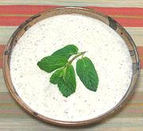

|
Pelted Wheat & Yogurt SoupArmenia - Dzedzadz Tanabour | ||||
| Makes: Effort: Sched: DoAhead: |
7 cups *** 10 hrs Yes |
This soup is in all my Armenian cookbooks, testimony to its importance. If Pelted Wheat is not available, see Note-1 for substitutions. See also Note-5 for variations. | |||
|
|
2/3 1-1/2 4 6 4 1 1 1/4 1 |
c c c oz c t c T |
Pelted Wheat (1) Water Yogurt (2) Onion Broth (3) Salt Egg Butter Mint, dried (4) |
This is a very filling soup, so few will want more than a cup. It is also quite tart. If you feel it seems too tart, some recipes allow up to 1/2 t of sugar. Do-Ahead: - (8 hrs - 5 min work exclusive of making broth)
|
tog_whtyog1 160206 aac232 and others -
www.clovegarden.com
©Andrew Grygus - agryg@aaxnet.com - Linking to and
non-commercial use of this page is permitted.